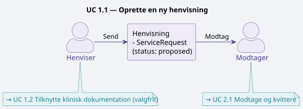
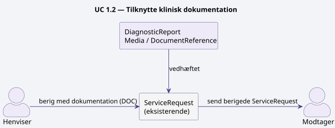
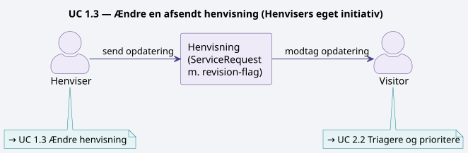
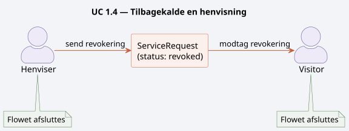
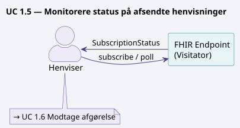
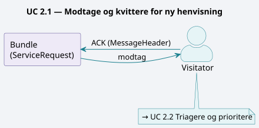
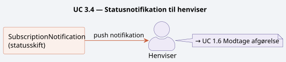

DK MEDCOM REFERRAL LM
0.1.0 - draft

DK MEDCOM REFERRAL LM
0.1.0 - draft

DK MEDCOM REFERRAL LM - Local Development build (v0.1.0) built by the FHIR (HL7® FHIR® Standard) Build Tools. See the Directory of published versions
Oversigten beskriver user stories for de to primære roller i et FHIR-baseret henvisningsflow:
henviser (den der afsender en henvisning)
Visitator (den der modtager og triagerer).
Derudover beskrives user stories der kun opstår i den fælles udvekslingsdialog mellem de to parter. Al kommunikation foregår via FHIR-baserede meddelelser.
| user story | FHIR-ressource(r) | Retning |
|---|---|---|
| Oprette henvisning | ServiceRequest | Henviser → Visitator |
| Tilknytte dokumentation | DiagnosticReport, Media, DocumentReference | Henviser → Visitator |
| Ændre henvisning | ServiceRequest (revision) | Henviser → Visitator |
| Tilbagekalde henvisning | ServiceRequest (revoked) | Henviser → Visitator |
| Monitorere status | Subscription, SubscriptionStatus | Begge |
| Modtage afgørelse | Task, SubscriptionNotification | Visitator → Henviser |
| Modtage og kvittere | Bundle, MessageHeader | Visitator (intern) |
| Triagere og prioritere | Task | Visitator (intern) |
| Acceptere og booke | ServiceRequest, Appointment | Visitator → Henviser |
| Afvise henvisning | Task, ServiceRequest | Visitator → Henviser |
| Videresende | ServiceRequest (replaces) | Visitator → Ny modtager (Ny Visitator) |
| Ændre prioritet | ServiceRequest, SubscriptionNotification | Visitator → Henviser |
| Anmode om supplement | CommunicationRequest | Visitator → Henviser |
| Besvare supplement | Communication | Henviser → Visitator |
| Faglig afklaring | Communication (thread) | Begge |
| Statusnotifikation | SubscriptionNotification | Visitator → Henviser |
| Alternativ visitation | Communication, Task | Begge |
| Korrektionsaftale | Communication, ServiceRequest | Begge |
Diagrammer:
- Hver user storie refererer til et tilhørende PlantUML-diagram i filenfhir-henvisning-use-cases-claude2.puml.
- Filen indeholder 18@startuml-blokke — én per user storie — og kan renderes enkeltvis via PlantUML-CLI (-p <diagram-id>) eller i editorer med PlantUML-understøttelse (VS Code, IntelliJ, Confluence o.l.).
- Diagrammerne kan også gengives samlet ved at ekskludere!include-direktiverne og blot åbne.puml-filen direkte.
Disse user stories udføres selvstændigt af henviseren uden at kræve aktiv respons fra visitatoren ud over systemkvittering.
User story: Som henviser ønsker jeg at kunne oprette og afsende en struktureret henvisning via FHIR,
når jeg har truffet en klinisk beslutning om at viderehenvise en patient,
så visitatoren modtager alle nødvendige oplysninger på et standardiseret format.

Henviseren udfærdiger og afsender en ny henvisning til et modtagende tilbud. Henvisningen repræsenteres som en ServiceRequest-ressource med status proposed og sendes i en FHIR-Bundle. Henvisningen indeholder patientoplysninger, indikation, hastegrad og ønsket ydelse. |
| Primær FHIR-ressource: | ServiceRequest |
| Triggerhændelse: | Klinisk beslutning om at henvise patient |
| Næste trin: | → 1.2 Tilknytte klinisk dokumentation (hvis supplerende materiale er relevant) · → 2.1 Modtage og kvittere for ny henvisning (visitatorsiden modtager) |
User story: Som henviser ønsker jeg at kunne vedhæfte relevant klinisk dokumentation til en eksisterende henvisning,
når jeg vurderer at visitatoren har brug for supplerende materiale for at træffe en god afgørelse,
så beslutningsgrundlaget er samlet ét sted.

Henviseren vedhæfter supplerende klinisk materiale til en eksisterende henvisning — fx laboratoriesvar, billeddiagnostik eller tidligere epikriser. Materialet knyttes til ServiceRequest-ressourcen via referencer til DiagnosticReport, Media eller DocumentReference. |
| Primær FHIR-ressource: | DiagnosticReport, Media, DocumentReference |
| Triggerhændelse: | Behov for at understøtte klinisk beslutningsgrundlag |
| Forrige trin: | ← 1.1 Oprette en ny henvisning (hvis supplerende materiale er relevant) |
| Næste trin: | → 2.1 Modtage og kvittere for ny henvisning (visitatoren modtager den berigede henvisning) |
User story: Som henviser ønsker jeg at kunne rette indholdet i en allerede afsendt henvisning,
når jeg opdager en fejl eller patientens kliniske situation ændrer sig,
så visitatoren altid arbejder ud fra korrekte og aktuelle oplysninger.

Henviseren opdaterer indholdet af en allerede afsendt henvisning — fx korrigerer indikation, hastegrad eller kontaktoplysninger. Opdateringen sker via en opdatering på den eksisterende ServiceRequest, og der sættes et revisionsflag så visitatoren notificeres om ændringen.
| Primær FHIR-ressource: | ServiceRequest (revision) |
| Triggerhændelse: | Fejl opdaget eller klinisk situation ændret efter afsendelse |
| Forrige trin: | ← 3.6 Korrektionsaftale (visitatoren anmoder om korrektion) |
| Næste trin: | → 2.2 Triagere og prioritere en henvisning (visitatoren modtager ændringsnotifikation og reviagerer) |
User story: Som henviser ønsker jeg at kunne tilbagekalde en afsendt henvisning,
når patienten ikke længere ønsker forløbet eller det kliniske grundlag er bortfaldet,
så visitatoren ikke bruger ressourcer på en henvisning der ikke skal ekspederes.

Henviseren annullerer en afsendt henvisning, der endnu ikke er ekspederet. ServiceRequest-status sættes til revoked og en notifikation sendes til visitatoren.
| Primær FHIR-ressource: | ServiceRequest (status = revoked) |
| Triggerhændelse: | Patienten ønsker ikke forløbet, eller klinisk grundlag er bortfaldet |
| Forrige trin: | ← 1.1 Oprette en ny henvisning (afsender ønsker at tilbagekalde) |
| Næste trin: | (Flowet afsluttes — ingen yderligere behandling påkrævet) |
User story: Som henviser ønsker jeg løbende at kunne se status på mine afsendte og udestående henvisninger,
når jeg har behov for overblik over patienternes videre forløb,
så jeg kan følge op og informere patienterne korrekt.

Henviseren følger løbende op på status for egne udestående henvisninger. Dette kan ske via FHIR-subscription (push) eller ved periodisk polling mod visitatorens FHIR-endpoint.
| Primær FHIR-ressource: | Subscription, SubscriptionStatus, ServiceRequest |
| Triggerhændelse: | Behov for overblik over egne afsendte henvisninger |
| Forrige trin: | ← 1.1 Oprette en ny henvisning (efter afsendelse ønskes overblik) |
| Næste trin: | → 1.6 Modtage afgørelse fra visitatoren (statusoverblikket leder til modtagelse af den endelige afgørelse) |
User story: Som henviser ønsker jeg automatisk at modtage visitatorens afgørelse i mit journalsystem,
når visitatoren har truffet beslutning om accept, afvisning eller alternativt tilbud,
så jeg hurtigt kan handle og orientere patienten.

Henviseren modtager visitatorens endelige afgørelse — accept, afvisning eller alternativt tilbud — og integrerer denne i eget journalsystem. Afgørelsen leveres som en Task-ressource eller notifikation med reference til den oprindelige ServiceRequest.
| Primær FHIR-ressource: | Task, SubscriptionNotification |
| Triggerhændelse: | Visitatoren har truffet afgørelse om henvisningen |
| Forrige trin: | ← 1.5 Monitorere status (statusoverblikket leder hertil) · ← 3.4 Statusnotifikation (notifikation udløser håndtering) |
| Næste trin: | → 1.1 Oprette en ny henvisning (hvis afgørelsen er en afvisning og patienten skal viderehenvisies) · (Flowet afsluttes ved accept) |
Disse user stories udføres selvstændigt af visitatoren som led i modtagelse og behandling af indkomne henvisninger.
User story: Som visitator ønsker jeg automatisk at modtage og kvittere for indkomne henvisninger via FHIR,
når en nyServiceRequestankommer i mit endpoint,
så afsenderen hurtigt får bekræftet at henvisningen er modtaget korrekt.

Visitatoren modtager en indkommende FHIR-Bundle med en ny ServiceRequest og sender en teknisk kvittering (ACK) tilbage til afsendersystemet. Henvisningen registreres i visitationssystemet med status active eller on-hold afhængigt af triagekapacitet.
| Primær FHIR-ressource: | Bundle, MessageHeader, ServiceRequest |
| Triggerhændelse: | Indkommende henvisning i FHIR-endpoint |
| Forrige trin: | ← 1.1 Oprette en ny henvisning (afsendelse af ny henvisning) · ← 1.2 Tilknytte klinisk dokumentation (beriget henvisning modtages) · ← 2.5 Videresende (ny modtager starter modtagelsesflow) |
| Næste trin: | → 2.2 Triagere og prioritere en henvisning |
User story: Som visitator ønsker jeg at kunne foretage en struktureret triage af en modtaget henvisning og dokumentere mit udfald,
når en ny eller opdateret henvisning er klar til klinisk vurdering,
så prioriteringen er sporbar og ensartet på tværs af alle indkomne sager.

Visitatoren vurderer henvisningens faglige indhold, klassificerer hastegrad og prioriterer i forhold til øvrige indkomne henvisninger. Triage-udfaldet dokumenteres i en Task-ressource med udfald og begrundelse.
| Primær FHIR-ressource: | Task (triage-outcome, priority) |
| Triggerhændelse: | Ny eller opdateret henvisning klar til klinisk vurdering |
| Forrige trin: | ← 2.1 Modtage og kvittere (efter kvittering påbegyndes triage) · ← 1.3 Ændre en afsendt henvisning (ændringsnotifikation modtaget) · ← 3.2 Besvare anmodning om supplement (supplement modtaget, triage genoptages) · ← 3.6 Korrektionsaftale (triage genoptages efter korrektion) |
| Næste trin: | → 2.3 Acceptere en henvisning og booke forløb (positiv afgørelse) · → 2.4 Afvise en henvisning (negativ afgørelse) · → 3.1 Anmode om supplerende oplysninger (grundlaget er utilstrækkeligt) · → 2.6 Ændre prioritet (prioriteten justeres) |
User story: Som visitator ønsker jeg at kunne acceptere en henvisning og oprette en booking,
når min visitationsafgørelse er positiv,
så patienten får en tid og henviseren automatisk modtager bekræftelsen.

Visitatoren accepterer henvisningen og opretter et forløb. Der bookes en tid, og ServiceRequest-status opdateres til active. En Appointment-ressource oprettes og linkes til henvisningen.
| Primær FHIR-ressource: | ServiceRequest (active), Appointment (booked) |
| Triggerhændelse: | Positiv visitationsafgørelse |
| Forrige trin: | ← 2.2 Triagere og prioritere (positiv afgørelse) · ← 3.5 Alternativ visitation (alternativt tilbud accepteres) · ← 3.3 Faglig afklaring (afklaring munder ud i accept) |
| Næste trin: | → 3.4 Statusnotifikation til henviser (henviser notificeres om accept og booking) |
User story: Som visitator ønsker jeg at kunne afvise en henvisning med en dokumenteret begrundelse,
når indikationen ikke er opfyldt eller kapaciteten er nået,
så henviseren forstår årsagen og kan tage stilling til næste skridt for patienten.

Visitatoren afviser henvisningen med en faglig eller kapacitetsmæssig begrundelse. ServiceRequest-status sættes til revoked eller completed med en Task-ressource der angiver årsag til afvisning.
| Primær FHIR-ressource: | Task (declined + reason), ServiceRequest |
| Triggerhændelse: | Indikation ikke opfyldt, forkert visitationsspor, eller kapacitetsloft nået |
| Forrige trin: | ← 2.2 Triagere og prioritere (negativ afgørelse) · ← 3.3 Faglig afklaring (afklaring munder ud i afvisning) |
| Næste trin: | → 3.4 Statusnotifikation til henviser (henviser notificeres om afvisning) · → 3.5 Aftale om alternativ visitation (hvis alternativ løsning bør afsøges) |
User story: Som visitator ønsker jeg at kunne videresende en fejlplaceret henvisning til rette modtager,
når jeg vurderer at et andet tilbud er bedre egnet,
så patienten ikke unødigt forsinkes og henviseren holdes orienteret om omdirigeringen.

Visitatoren vurderer at henvisningen hører hjemme et andet sted og videresender. Der oprettes en ny ServiceRequest med reference til den originale via replaces-attributten, og der sendes notifikation til den oprindelige henviser.
| Primær FHIR-ressource: | ServiceRequest (replaces), Task, Communication |
| Triggerhændelse: | Forkert modtager eller bedre egnet tilbud identificeret |
| Forrige trin: | ← 2.2 Triagere og prioritere (forkert modtager identificeret) |
| Næste trin: | → 2.1 Modtage og kvittere for ny henvisning (ny modtager starter sit eget modtagelsesflow) · → 3.4 Statusnotifikation til henviser (den oprindelige henviser orienteres) |
User story: Som visitator ønsker jeg at kunne justere prioriteten på en allerede modtaget henvisning,
når ny klinisk information eller ændret kapacitetssituation tilsiger det,
så den kliniske hastegrad afspejles korrekt og henviseren notificeres om ændringen.

Visitatoren revurderer hastegraden for en allerede modtaget henvisning — fx på baggrund af ny klinisk information eller ændret kapacitetssituation. Prioriteten opdateres på ServiceRequest og der sendes notifikation til henviseren.
| Primær FHIR-ressource: | ServiceRequest (priority update), SubscriptionNotification |
| Triggerhændelse: | Ny information ændrer klinisk hastegrad |
| Forrige trin: | ← 2.2 Triagere og prioritere (prioritetsjustering under triage) |
| Næste trin: | → 3.4 Statusnotifikation til henviser (henviser notificeres om den ændrede prioritet) |
Disse user stories forudsætter aktiv kommunikation frem og tilbage mellem henviser og visitator via FHIR-beskeder.
User story: Som visitator ønsker jeg at kunne sende en struktureret anmodning om supplerende oplysninger til henviseren,
når grundlaget for triage er utilstrækkeligt,
så jeg kan træffe en fagligt forsvarlig visitationsafgørelse uden at afvise unødigt.

Visitatoren mangler oplysninger for at kunne triagere og sender en struktureret anmodning til henviseren om at supplere med konkrete kliniske data — fx blodprøveresultater, BMI, medicinliste eller tidligere forløb.
| Primær FHIR-ressource: | CommunicationRequest (fra visitator til henviser) |
| Triggerhændelse: | Utilstrækkeligt grundlag for visitationsafgørelse |
| Forrige trin: | ← 2.2 Triagere og prioritere (utilstrækkeligt grundlag for triage) |
| Næste trin: | → 3.2 Besvare anmodning om supplement |
User story: Som henviser ønsker jeg at kunne besvare en supplement-anmodning med de efterspurgte kliniske oplysninger,
når visitatoren har bedt om yderligere data,
så visitatoren hurtigt kan genoptage og afslutte triage-processen.

Henviseren modtager en supplement-anmodning og besvarer denne ved at sende de efterspurgte oplysninger. Svaret sendes som en Communication-ressource med reference til den oprindelige CommunicationRequest og til ServiceRequest.
| Primær FHIR-ressource: | Communication (reply, in-response-to) |
| Triggerhændelse: | Modtagelse af CommunicationRequest fra visitatoren |
| Forrige trin: | ← 3.1 Anmode om supplerende oplysninger (supplement anmodet) |
| Næste trin: | → 2.2 Triagere og prioritere en henvisning (visitatoren genoptager triage med det modtagne supplement) · → 3.3 Faglig afklaring i dialog (hvis svaret afføder yderligere spørgsmål) |
User story: Som henviser og visitator ønsker vi begge at kunne føre en struktureret faglig dialog om en konkret henvisning,
når indikation, egnethed eller behandlingsvalg er uklart,
så vi i fællesskab kan nå frem til den rigtige afgørelse for patienten uden at skulle bruge andre kommunikationskanaler.

Henviser og visitator udveksler kliniske spørgsmål og svar for at afklare indikation, behandlingsegnethed eller alternativ tilgang — uden at dette nødvendigvis afklares i én besked. Dialogen føres som en kæde af Communication-ressourcer med indbyrdes referencer.
| Primær FHIR-ressource: | Communication (thread med in-response-to-kæde) |
| Triggerhændelse: | Faglig uklarhed der kræver mere end én udveksling |
| Forrige trin: | ← 3.2 Besvare anmodning om supplement (svaret afføder yderligere spørgsmål) |
| Næste trin: | → 2.3 Acceptere en henvisning og booke forløb (afklaring munder ud i accept) · → 2.4 Afvise en henvisning (afklaring munder ud i afvisning) |
User story: Som henviser ønsker jeg automatisk at modtage en notifikation,
når status på en af mine henvisninger ændrer sig hos visitatoren,
så jeg til enhver tid er opdateret om forløbet uden at skulle forespørge aktivt.

Visitatoren notificerer automatisk henviseren ved statusskift på en afsendt henvisning — fx modtaget, under vurdering, accepteret eller afvist. Notifikationen leveres via FHIR-subscription og indeholder reference til den opdaterede ServiceRequest.
| Primær FHIR-ressource: | SubscriptionNotification, ServiceRequest |
| Triggerhændelse: | Ethvert statusskift på en aktiv henvisning hos visitatoren |
| Forrige trin: | ← 2.3 Acceptere og booke (accept udløser notifikation) · ← 2.4 Afvise en henvisning (afvisning udløser notifikation) · ← 2.6 Ændre prioritet (prioritetsændring udløser notifikation) |
| Næste trin: | → 1.6 Modtage afgørelse fra visitatoren (notifikationen udløser håndtering af afgørelsen hos henviseren) |
User story: Som visitator ønsker jeg at kunne indlede en dialog med henviseren om et alternativt tilbud,
når jeg ikke kan imødekomme den primære henvisning,
så patienten ikke ender i en blindgyde og vi i fællesskab finder en løsning.

Henviser og visitator forhandler i fællesskab om et alternativt tilbud,
når det primære visitationsspor ikke er muligt. Dialogen foregår via Communication, og den resulterende aftale dokumenteres i en Task med reference til det alternative tilbud.
| Primær FHIR-ressource: | Communication, Task, ServiceRequest (alternativ) |
| Triggerhændelse: | Afvisning kombineret med behov for at finde alternativ løsning for patienten |
| Forrige trin: | ← 2.4 Afvise en henvisning (afvisning kombineret med søgning efter alternativ) |
| Næste trin: | → 1.1 Oprette en ny henvisning (nyt alternativt tilbud kræver ny henvisning) · → 2.3 Acceptere en henvisning og booke forløb (alternativt tilbud accepteres) |
User story: Som visitator ønsker jeg at kunne kontakte henviseren og aftale en korrektion,
når jeg opdager en fejl i en modtaget henvisning,
så fejlen rettes på en koordineret og sporbar måde uden at vi mister historikken.

Visitatoren opdager en fejl i en modtaget henvisning — fx forkert CPR-nummer, forkert ydelseskode eller manglende samtykkedokumentation — og indleder en dialog med henviseren om korrektion. Korrektionen aftales via Communication-besked og gennemføres med en efterfølgende opdatering af ServiceRequest.
| Primær FHIR-ressource: | Communication, ServiceRequest (korrektion) |
| Triggerhændelse: | Fejl opdaget under modtagelse eller triage hos visitatoren |
| Forrige trin: | ← 2.4 Afvise en henvisning (fejl opdaget, korrektionsdiolog indledes) |
| Næste trin: | → 1.3 Ændre en afsendt henvisning (henviser retter og sender) · → 2.2 Triagere og prioritere en henvisning (visitatoren genoptager triage efter korrektion) |